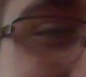

Wie ben ik
Hoi ik ben jared.
Ik ga naar school op het metis montessori lyceum in de coderclass. Ik vind het heel leuk en leer hier heel veel over allerij programeer talen zoals python, javascript, HTML/CSS maar ook met computers zoals raspberri-pi en arduino. ik heb een zusje en twee huisdieren mijn kat genaamd witsokje en mijn hond heet nugget en hij is tien keer zo klein is als mijn kat.

nugget